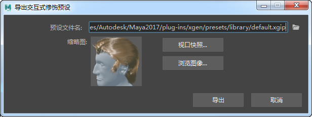

您可以将您的交互式修饰保存到预设 XGIP 文件，这些文件可以应用于任何多边形网格对象。使用保存的预设开始新的头发和毛发修饰，或使用它们管理基于快照的头发样式。预设与拓扑无关，因此可以将它们应用于角色网格的低分辨率和高分辨率版本，或者应用于不同的网格形状。
注： 不能将交互式修饰预设（XGIP 文件）与 XGen 几何体实例化器描述一起使用。同样，不能将 XGen 几何体实例化器预设 (XGP) 文件与交互式修饰描述一起使用。
有关 XGen 几何体实例化器预设的信息，请参见将头发、毛发或实例化几何体另存为 XGen 预设和使用 XGen 预设创建头发、毛发或实例化几何体。
关于交互式修饰预设
交互式修饰预设包含源修饰的描述中的所有描述和修改器节点网络、遮罩和贴图。当您将预设应用于多边形网格时，会为目标网格对象创建新的描述和修改器节点网络。如果需要，之后您可以像任何其他交互式修饰描述一样修改修饰。
将交互式修饰另存为预设
- 在“交互式修饰编辑器”(Interactive Grooming Editor)中，选择要另存为预设的描述。
- 选择。
- 在“导出交互式修饰预设”(Export Interactive Groom Preset)窗口中，单击浏览图标
 将预设保存到指定位置。
将预设保存到指定位置。
默认情况下，预设文件保存到您当前设置 Maya 项目的 xgen 目录。
- 在“文件保存”(File Save)窗口中的“文件名”(File Name)旁边键入预设名称，然后单击“保存”(Save)。
- （可选）通过执行以下操作之一，添加缩略图以标识“XGen 库”(XGen Library)中的预设：
- 单击“视口快照”(Viewport Snapshot)以从当前场景视图创建图像。
- 单击“浏览”(Browse)以查找图像文件。
 - 单击“导出”(Export)。
您可以将自己的交互式修饰预设添加到XGen 库(XGen Library)。
加载交互式修饰预设
- 选择要用于预设的网格对象的网格或面。
- 执行下列操作之一：
- 要将保存的预设应用到磁盘上的位置，请在“交互式修饰编辑器”(Interactive Groom Editor)中，选择，然后浏览到交互式修饰预设 (XGIP) 文件。
-
要应用“XGen 库”(XGen Library)中的预设，请在“建模”(Modeling)菜单集中，选择。然后选择一个预设目录和预设的缩略图。
- 在“导入交互式修饰预设”(Import Interactive Grooming Preset)选项窗口中，浏览到要导入的 XGIP 预设文件的位置。
- 通过选择“传递方法”(Transfer Method)和“方向”(Orientation)选项，指定如何在目标网格上确定样条线的位置和方向。
- 单击“导入”(Import)。